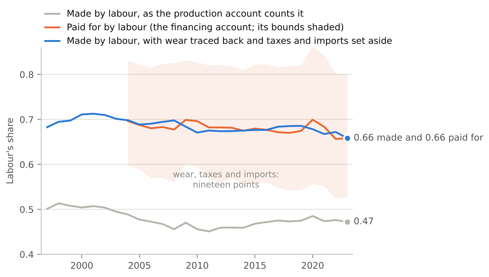
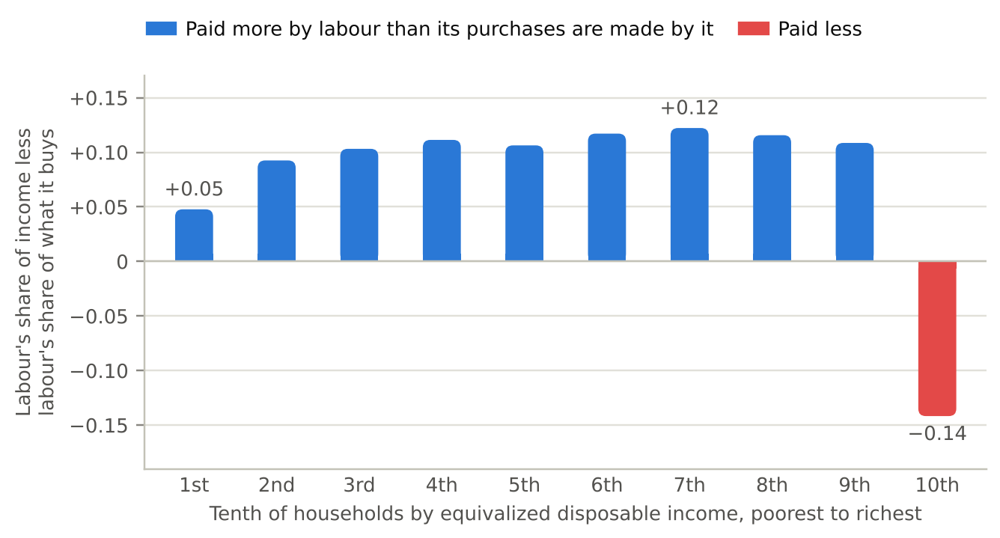
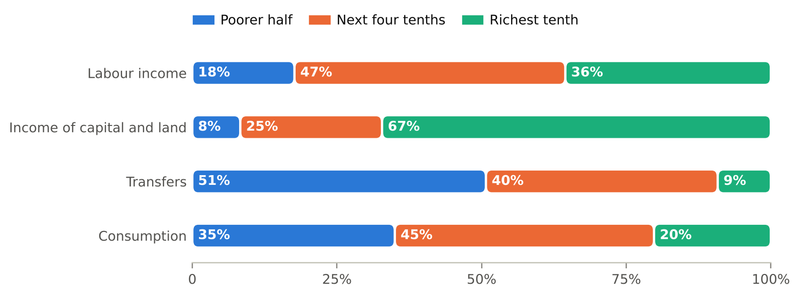
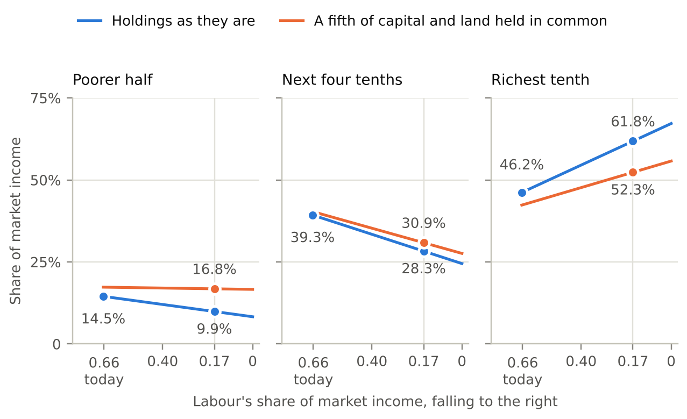
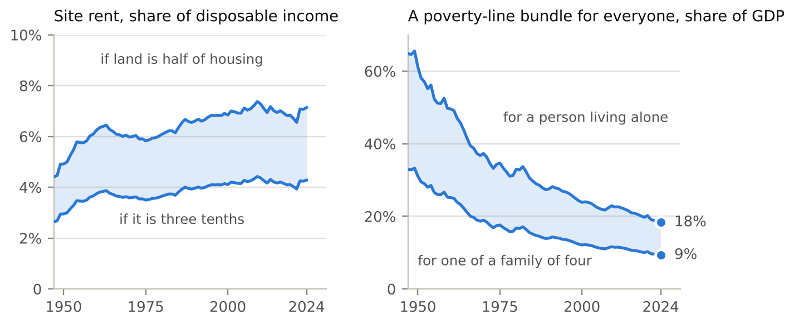
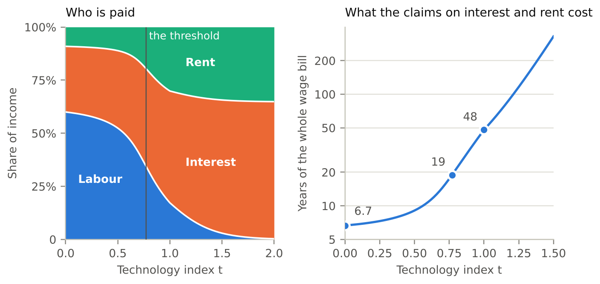

Claims on labour, capital and land, and who holds them
Status of this draft. It was written by Claude at Stella Wilson’s request, from the working notes in this folder. Every number comes from a script named in the data note. All but those flagged below are held by a check, and a further check (
checks/check_draft.py) confirms that the numbers printed here are the ones the scripts produce. Three things are provisional. The bibliographic details of the references have been checked only in part, as the reference list says, and what the draft attributes to each source has not yet been checked against the source. Two passages lean on work that sits on other branches of the repository and is not yet checked here: the accounting of the wage in Section 5, and the effects of a land tax in Section 7.4. And every income group is given the average basket of goods; telling renters from owners is the next piece of work.
A household’s income is paid by three kinds of claim: its labour, its share of capital, and its share of land and the other things production cannot make. What it buys is made by the same three. We ask how the two compare for American households, and what happens to a household when payments move from one claim to another. In aggregate they match. Once the wear on machines and buildings is traced back to the work, capital and land that replace it, labour makes 66 percent of what consumption buys in 2023 and pays for 66 percent of it. Two accounts built from different data differ by one point on average over twenty years. Individual households do not match. Nine in ten are paid more by labour than their purchases are made by it, by about a tenth of their income, and the richest tenth holds two-thirds of the claims on capital and land. So far the movement of payments between claims has been small, and it has cost most households little. We then ask what could change the holdings. Land and the commons can be taxed without discouraging anything, but their rent is 4 to 7 percent of disposable income. Capital is far larger, and in the economy of a companion paper a tax on its return is paid by wages, so the claim on capital can be spread only by spreading its ownership.
In 1930 Keynes predicted that within a hundred years the standard of living in the rich countries would be between four and eight times as high, and he imagined a working week of fifteen hours (Keynes 1930). The first half of that forecast has held up well. The second has not. One reason is that the forecast took something for granted: that the gains from higher productivity would reach most people in a form that allowed them to work less. A wage is one such form. Income from owning things is another, and ownership is far less evenly spread than work.
This paper measures how American households are paid and compares it with how the things they buy are made. One idea runs through it. Every dollar of income is paid by one of three kinds of claim: a claim on someone’s labour, a claim on capital, or a claim on land and the other inputs that production cannot make. Every dollar spent on consumption, once the whole chain of production behind it is followed back, ends up as a payment to the same three. A household that is paid by the three claims in the same proportions as its purchases are made by them is insulated when payments shift from one claim to another, because what it loses as a seller it gains back as a buyer. A household paid mostly by one claim rises and falls with that claim.
The question has become more pressing because of a companion paper (Båge and Wilson 2026). That paper shows that if machines can do the work people do, and can also build one another, then the wage is capped by the cost of the machine that would replace the worker, and that cost resolves into rent and interest. In that case payments move from labour to the other two claims, possibly a long way. Whether this will happen is uncertain, and the companion paper says so. What can be measured today is who would be affected, by how much, and what it would take to change the answer. Those are our subjects. None of the measurements depends on the companion paper being right.
We report five findings.
In aggregate, the claims match. Taking all households together, labour makes 66 percent of what consumption buys and pays for 66 percent of it. The first number comes from the input–output accounts and the second from an account of where households’ spending money originates. They are built from different data, and over 2004–2023 they differ by one point on average. An earlier comparison of the same two accounts, in a previous version of the companion paper, found a gap of nineteen points between them. That gap came from setting side by side two accounts kept on different bases. Section 3 shows where each of the nineteen points goes.
Households do not look like the aggregate. Nine households in ten are paid more by labour than their purchases are made by it. The difference is about a tenth of their income. For the richest tenth it runs the other way, by 14 percent of income, and that group holds 67 percent of the claims on capital and land. The transfers that make up much of the income of poorer households do not change the picture, because 68 percent of the taxes that fund them are levied on labour.
The shift so far has been small. Between 2004 and 2023 labour’s share of households’ market income fell by about four and a half points. That moved 1.4 points of market income to the richest tenth. The same group gained twice as much, 2.8 points, by holding a larger share of each kind of claim, labour included. Most of what has happened to the typical wage since the 1970s lies in slower growth of output and in pay spreading out among workers. Neither is a movement between claims, and no claim on capital or land would have protected a household against either.
A larger shift would bear hardest on the middle. If labour were paid 17 percent of market income, as it is at one point on the companion paper’s path, and households held what they hold today, the richest tenth’s share of market income would rise from 46 to 62 percent. The share of the next four tenths would fall from 39 to 28 percent, and the poorer half’s from 14.5 to 10 percent. A common holding of about a seventh of the claims on capital and land would keep the poorer half’s share where it is. Nothing short of six-sevenths would do the same for the four tenths above it, because they hold nearly half of all labour income.
The two ways of changing the holdings differ in kind. Land and the commons can be taxed without discouraging anything, and a dividend paid from their rent protects a household against the one price that has risen most against wages, the price of shelter. But the base is small: site rent is 4 to 7 percent of disposable income. Capital is much larger. In the companion paper’s economy, however, a tax on the return to capital is paid by wages, almost dollar for dollar. Taxing the cash flow of capital with investment written off, or buying part of the stock, moves the same share of income without changing anything else. The claim on capital can be spread, but only by spreading ownership of it.
None of these ideas is new on its own. That a share of what land and capital earn should belong to everyone goes back to Paine (1797) and George (1879), and Meade (1964) made the case for capital. Freeman (2015) put the same point for a world of robots in his title: who owns the robots rules the world. Following a tax or a price change through to the incomes it lands on is the method of incidence analysis (Musgrave 1959). Distributional national accounts allocate all of national income to households (Piketty, Saez and Zucman 2018). Rognlie (2015) showed that much of the recent rise in capital’s share of income is housing, and Moll, Rachel and Restrepo (2022) study how automation raises the return to wealth. What we add is a measurement that joins them: what consumption is made of, on the same basis as what pays for it, set against what each group of households holds.
Section 2 defines the terms. Section 3 compares what consumption is made of with what pays for it. Section 4 shows who holds which claim. Sections 5 and 6 ask what the movement between claims has cost so far and what a larger one would do. Sections 7 and 8 take land and capital in turn. Section 9 says what the paper leaves out.
By a claim we mean a title to a kind of payment. There are three kinds.
A claim on labour is an hour of someone’s work, and its payment is the wage. A claim on capital is a title to produced things that are used in production, such as machines, buildings and software. Its payment is the return that owners require for holding them, which we call interest, as the companion paper does. In the data this return includes profit. A claim on land is a title to something production cannot make: a site, a mineral deposit, a band of radio spectrum. Its payment is rent. A house combines two of these. The building is capital and the ground under it is land.
Two kinds of income need a rule. The first is the income of people who work for themselves, which is partly a wage and partly a return on what they own. We split it as the financing account described in Section 3 does, counting 38 percent of it as labour, and we show how the results change when that share is zero or two-thirds. The second is transfers from the government. A transfer is a claim too, but an indirect one. It is a claim on the taxes that fund it, and so on whatever those taxes are levied on.
Write sk for the share of all income that is paid to claims of kind k, and hk for the share of those claims that a particular household holds. Then the household’s share of all income is
I/Y = ∑k hk sk.
This is an identity. It says that a household’s share of income is its share of each kind of claim, weighted by how much that kind of claim is paid. It follows that when one point of income moves from labour to the other claims, a household’s share of income changes by its share of the other claims less its share of labour. In 2023 the poorer half of households held 17.7 percent of labour income and 8.3 percent of the income of capital and land. Each point that moves from labour to the other claims therefore costs that half 0.094 points of all market income.
A share of income is not the whole story, because prices move too. A household gains when the things it buys become cheaper, and things become cheaper or dearer partly because the payments to the claims that make them change.
Let ik be the share of the household’s income that claim k pays, and let ck be the share of the cost of the household’s basket of goods that ends up as payments to claim k, once every stage of production is followed back. Let πk be the payment to one unit of claim k. Then, for small changes,
d ln (I/P) = g + ∑k (ik − ck) d ln πk,
where P is the household’s cost of living and g is the rate at which the cost of its basket falls when all payments are held fixed. That rate is productivity growth in the things the household buys.
The reasoning is short. The household’s income changes in proportion to the payments to its claims, weighted by ik. Its cost of living changes in proportion to the prices of what it buys, weighted by its spending. Under competition each price equals cost, so each price changes in proportion to the payments to the claims that make the good, weighted by their shares of its cost, less the growth of productivity in making it. Putting the two together gives the formula. It holds for any technology with constant returns and any preferences, because the household’s and the producers’ adjustments to changed prices affect the result only at second order. Since the ik sum to one and so do the ck, only relative payments matter.
We call ik − ck the household’s exposure to claim k. A household whose exposures are all zero is matched: the claims that pay it are, in proportion, the claims that make what it buys.
A matched household receives productivity growth and nothing else. Its real income grows at the rate g whatever happens to wages, rents and interest. This is the condition Keynes’s forecast needed. It does not require equal incomes. It requires that each household’s claims have the same mix as its purchases.
A transfer carries the exposure of its base. A benefit funded by a tax on wages rises and falls with wages. Counting transfers as a fourth kind of income, separate from the three claims, would hide this.
Being matched protects against shifts, not against stagnation. If output grows slowly, g is small for everyone. Holding more capital does not help with that.
Exposures add up. If all income were spent on consumption, the exposures of all households, weighted by their incomes, would sum to zero for each claim. One household’s exposure would be the mirror image of another’s. Some income is saved or taxed and not consumed, so the sum need not be exactly zero. Section 4 finds that it is about one point.
To use any of this, the two sets of shares must be measured on the same basis. The next section does that for households taken together.
The input–output accounts of the Bureau of Economic Analysis record what each industry buys from every other, what it pays its employees, and what is left over. With them one can follow a dollar of consumer spending back through every stage of production until it has been divided among a few final categories. A recent Bureau working paper does this for personal consumption (Samuels and Senel 2026), and an earlier version of the companion paper used its result: of each dollar of consumption in 2023, 47 cents is the work of people in the United States.
We repeat the exercise with the Bureau’s input–output tables for every year from 1997 to 2023, using the method of the repository’s work on the labour content of machinery. The first column of Table 1 gives the result for 2023. Of the consumer’s dollar, 42.5 cents is employees’ pay. Wear on machines and buildings takes 14.2 cents. The surplus left to owners after that wear takes 27.0 cents. Taxes on production take 7.2 cents and imports 9.1 cents. Our figure for labour, with the working share of self-employment income added, is within two and a half points of the Bureau’s in every year.
| The consumer’s dollar, 2023 | As the production account counts it | With wear traced back |
|---|---|---|
| Employees’ pay | 0.425 | 0.500 |
| Wear on machines and buildings | 0.142 | — |
| Net surplus | 0.270 | 0.305 |
| Taxes on production | 0.072 | 0.078 |
| Imports | 0.091 | 0.117 |
Two things in the first column stop it from being compared with anyone’s income.
The first is wear. A machine that wears out is not a payment to anybody. It has to be replaced, and replacing it takes work, capital and land again. Incomes are measured after wear, so the account of what consumption is made of should be too. We replace each dollar of wear with a dollar of the investment goods that rebuild the thing worn: residential investment for housing, public investment for government capital, and private nonresidential investment for everything else. Making those goods wears out machines in turn, so the replacement is repeated until nothing is left. Three linear equations do this exactly. By the end, each dollar of wear has paid 53 cents to employees.
The second is that taxes on production and imports are part of the price but are neither labour’s income nor capital’s at home. A sales tax goes to the government and an import is paid for abroad. We leave both to one side and ask how the remainder divides.
The second column of Table 1 shows the dollar with wear traced back: 50.0 cents of employees’ pay and 30.5 cents of net surplus. Adding the working share of self-employment income to pay, labour receives 53.0 cents and capital and land 27.5. Labour’s share of the two is 0.658. The share is 0.621 if none of the income of the self-employed is counted as labour and 0.687 if two-thirds is. It is 0.664 if imports are treated as though they had been made at home, and 0.676 if wear is split from surplus by one economy-wide ratio in place of industry by industry.
The financing account asks a different question of different data: of the money households spend on consumption, how much originates in labour? It works from the Bureau’s distribution of personal income, tenth by tenth, and traces transfers back to the taxes that fund them. Its answer for 2023 is 0.658, inside bounds of 0.527 and 0.801 that reflect what cannot be known about which dollars pay for which purchases.
The two numbers are the same. Figure 1 shows them year by year. From 2004 to 2023 the difference between them averages 0.000. It is never larger than 0.025 in either direction, and its average size is 0.010. The financing account’s own bounds lie on average twelve points below its centre and fourteen above, so the production side pins that centre down much more tightly than the account can itself.

The nineteen points that separated the grey line from the orange one in 2023 can now be accounted for. Starting from the Bureau’s 0.472: our count of labour before any adjustment is 0.021 lower. Tracing wear back adds 0.079. Leaving taxes and imports aside adds 0.128. The result is 0.658.
The September 2026 version of the companion paper read those nineteen points differently. It reported that consumption was “substantially more labor-financed than production is labor-intensive”. That comparison set an account kept in incomes, which are net of wear, beside an account that counts wear as capital’s and includes taxes and imports. We withdraw that reading here. The agreement of the two accounts is the more useful fact, because each then supports the other. It is also what the national accounts lead one to expect. Income and product are two sides of one ledger, so labour’s share of what is made and labour’s share of what is earned can differ only through what is saved, taxed or traded.
There is a third account, which Section 4 builds: the incomes households actually receive, by kind, with the corporate income that is never paid out added back. On that account labour is 0.666 of all households’ income in 2023, and over 2004–2023 it differs from what consumption is made of by 0.011 on average. Three accounts, built from the input–output tables, from an attribution of spending and from the distribution of personal income, agree to within about a point on average and two and a half points in any one year.
One real difference survives. Some consumption is paid for out of savings or borrowing: 10.6 percent of it in 2023, on the financing account’s count. If that part is set aside, labour pays for 73.6 percent of what is bought out of current income. That is 8 points more than labour’s share of what is made, and 7 points more on average over the twenty years. The reason is simple. Labour income is mostly spent, while a good part of capital’s income is saved, or is kept inside companies and never reaches a household. This is a fact about saving. It does not mean that consumption is made by one set of claims and paid for by another.
On this basis labour’s share of what consumption is made of was 0.683 in 1997, reached 0.713 in 2001, and was 0.658 in 2023. Since that peak it has fallen by five and a half points.
The Bureau of Economic Analysis publishes the distribution of personal income by tenth of households, ranked by disposable income adjusted for household size. For each tenth it gives employees’ compensation, the income of the self-employed, rental income, interest, dividends and government benefits. We use the years 2004 to 2023. Incomes are measured before tax, and we take the taxes a household pays to fall on its kinds of income in proportion.
We make two additions. First, a large part of corporate income never appears in anyone’s personal income: profits that companies keep, and the taxes they pay on profits. Both belong to the owners of the companies. We allocate them to tenths in proportion to dividends. Without this step every group looks more dependent on labour than it is, and the richest most of all. Second, we count each dollar of government benefits as a claim on the taxes that fund it. On the financing account’s measure, 68 percent of tax revenue in 2023 was raised from labour income, so 68 cents of each dollar of benefits is counted as labour and the rest as capital and land.
For the other side of the comparison we give every group the average basket, of which labour makes 0.658. Section 4.4 explains what that leaves out.
| 2023 | Labour’s share of its income | Exposure to labour | Its share of labour income | of capital and land income | of transfers | of consumption |
|---|---|---|---|---|---|---|
| Poorer half | 0.758 | +0.100 | 17.7% | 8.3% | 50.7% | 35.0% |
| Next four tenths | 0.773 | +0.115 | 46.8% | 24.5% | 40.1% | 44.8% |
| Richest tenth | 0.516 | −0.142 | 35.5% | 67.2% | 9.2% | 20.2% |
| Everyone | 0.666 | +0.008 | 100% | 100% | 100% | 100% |
Table 2 and Figures 2 and 3 give the picture for 2023. For the poorer half of households, labour accounts for 75.8 percent of income, directly or through the taxes behind their benefits. For the next four tenths it is 77.3 percent. That is ten and eleven and a half points above labour’s share of what they buy. For the richest tenth labour is 51.6 percent of income, fourteen points below. That tenth receives 35.5 percent of all labour income, 67.2 percent of the income of capital and land, and does 20.2 percent of the consuming.


Three features are worth drawing out.
The second to the ninth tenths are much alike. In each of them labour is between 81 and 83 percent of market income, and between 75 and 78 percent of all income once benefits and corporate income are counted. The line that matters falls between the richest tenth and everyone else, and not between the middle and the bottom.
The poorest tenth is the least exposed of the nine, at +0.05. This is because 58 percent of its income is benefits, and a third of the taxes behind benefits fall on capital and land. Its protection is the tax system’s mix, not anything it owns.
Taking everyone together, the exposure is +0.008 in 2023 and +0.011 on average over the twenty years. This is the adding-up property of Section 2.4, and it is a check on the whole exercise: three sets of data that share nothing but the national accounts they are reconciled to give the same answer for the aggregate.
The signs do not depend on the judgments. We recomputed every year with the working share of self-employment income at zero, 0.38 and two-thirds, and with the labour share of taxes at the low end, middle and high end of its range. In all nine combinations, and in every year, the poorer nine tenths are paid more by labour than their purchases are made by it and the richest tenth less. For 2023 the exposure of the poorer half ranges from +0.06 to +0.15, that of the next four tenths from +0.09 to +0.15, and that of the richest tenth from −0.16 to −0.13.
The allocation of corporate income matters more. Without it, labour is 57.8 percent of the richest tenth’s income; with it, 51.6 percent.
Not every household buys the average basket, and one part of the basket is made very differently from the rest. Shelter is 15.4 percent of consumer spending. Labour makes only 23 percent of it, because most of the cost of shelter is the return on the building and the site. Labour makes 74 percent of everything else.
This matters for households that rent. A household that owns its home is paid, in effect, the rent it would otherwise pay, so its shelter is matched. Sinai and Souleles (2005) make the same point about the risk of rent rising. A household that rents is not. Suppose a household lives on wages alone. If it buys the average basket, its exposure to labour is 0.34. If it spends 30 percent of its budget on rent, its exposure is 0.42, and at 40 percent it is 0.47. Table 2 gives every group the average basket and so understates the exposure of renters and overstates that of owners. Separating them needs data on spending by income and tenure, which exist and which we have not yet used.
Payments have moved from labour to capital and land over the last two decades, and Section 2.2 says exactly what that does to each group’s share of income. A group’s share also changes for a second reason: its holdings of each claim can change. The two effects can be separated exactly.
Between 2004 and 2023 labour’s share of households’ market income fell from 0.709 to 0.664. Over the same years the richest tenth’s share of market income rose by 4.2 points. Of that, 1.4 points came from payments moving between claims. The other 2.8 points came from the richest tenth holding more of each claim: its share of labour income rose from 33.8 to 35.5 percent, and its share of the income of capital and land from 62.0 to 67.2 percent. The next four tenths lost 4.1 points, about 1 from the movement between claims and about 3 from holding less of each. The poorer half’s share was almost unchanged.
So the movement between claims has been the smaller part of what happened to the distribution of income, and its effect on any one group has been a point or two of market income.
A longer view of wages points the same way. The figures in this paragraph come from code/wage_shortfall.py and a data panel on another branch of the repository. They are not yet held by a check here and should be read as provisional. From 1950 to 1973 the hourly wage of production and nonsupervisory workers, measured against consumer prices other than shelter, grew by 2.2 percent a year. From 1973 to 1995 it fell by 0.6 percent a year, and since then it has grown by 1.1 percent a year. By 2024 it stood at 1/2.6 of what the earlier pace would have made it. That shortfall can be divided. Slower growth of output per hour accounts for 42 percent of it. Average pay pulling away from the pay of production workers accounts for 30 percent. The fall in labour’s share of income accounts for 16 percent, and 13 percent is left over. If the wage is measured against all consumer prices, shelter included, the shortfall is a little larger, and the rising relative price of shelter is 8 percent of it.
Only the labour-share part and the shelter part are movements between claims. Together they are a little over a fifth of the shortfall. The larger parts are output that did not grow and pay that spread out among workers. A household matched to its basket would have been spared that fifth and not the rest.
The companion paper describes a path along which machines take over more of the work, and more of the work of building machines. In its illustrative economy labour’s share of income is 60 percent at the start, 17 percent at a point it labels t = 1, and close to zero beyond. We do not know whether the economy is on such a path. But the identity of Section 2.2 lets us say what it would do to each group, given what each group holds today.
Figure 4 shows the answer. If labour were paid 17 percent of market income and holdings were as they are, the richest tenth’s share of market income would rise from 46.2 to 61.8 percent. The next four tenths would fall from 39.3 to 28.3 percent, and the poorer half from 14.5 to 9.9 percent. In the limit, with nothing paid to labour, each group’s share is simply its share of capital and land: 67.2, 24.5 and 8.3 percent.

The group that loses most is not the poorest. The four tenths above the median hold 46.8 percent of labour income, more than any other group, and 24.5 percent of the other claims. Their position in labour is the largest in the economy.
Now suppose a share θ of the claims on capital and land were held in common, with its income divided equally among all households. How large would θ have to be to keep a group’s share of market income where it is today? For the poorer half the answer is 0.13 if labour is paid 17 percent, and 0.15 if labour is paid nothing. A common holding of a fifth would raise the poorer half’s share to 17 percent in either case. For the next four tenths the answer is 0.86 and 0.96. A common holding can protect the poorer half. It cannot keep the upper middle where it is, short of holding nearly everything in common. With a fifth held in common their share would be 31 percent at a labour share of 0.17, against 39 percent today.
These are statements about shares of market income. They say nothing about how large the income is. On the companion paper’s path total income grows a great deal, so a smaller share can be a larger amount. The shares say who gains relative to whom.
There are two things other than labour that a household could hold, and they differ in almost every respect that matters for policy. We begin with the smaller.
We measure the rent of residential sites as a share, between 30 and 50 percent, of what households spend on housing services, following the companion paper. On that measure site rent was between 4.3 and 7.1 percent of disposable income in 2024, or between 2,776 and 4,627 dollars per person. In 1975 it was between 3.5 and 5.8 percent. The left panel of Figure 5 shows the series. If all of it were collected and paid out equally, how much of a poverty-line standard of living would it cover for each person? On our four series for 2024 the answer runs from 18 to 58 percent. It depends on the share of housing counted as land, and on whether the poverty line is that of a person living alone or of one member of a family of four. The companion paper adds measures built from land values and reports a median of 33 percent for 2025, with a range from 18 to 59. The measure leaves out commercial sites and mineral rents, and it holds land’s share of housing fixed, so it should be read as a lower bound on the level and as silent about the trend in that share.

It may seem odd that the things we physically depend on, such as land, ore, water and sunlight, earn so little. The reason is competition among their owners. Suppose two iron deposits are owned separately and either could supply the whole market. Each owner will undercut the other until the price covers only the cost of digging, and the rent on both deposits is zero. Rent is paid only for what has no second source: a deposit that is cheaper to mine than the next one, a site in a place where people want to be, a resource that will run out. Most of what production takes from nature has a second source. That abundance is good news, and it is also the reason the base is small. An economy cannot both have resources to spare and fund much of its consumption from their rent.
A tax on the rent of land has a well-known advantage: it does not change how much land there is or how it is best used, so it discourages nothing (George 1879). Paid out equally, its revenue would be a small dividend.
Small as it is, such a dividend has a property the exposure formula makes clear. It rises when rent rises. For a household that occupies an average site, a rise in rent costs it exactly what the dividend returns. Section 4.4 showed that renters are the households most exposed to labour, because shelter contains so little of it. A dividend from rent is a claim on precisely the part of their basket that their wages do not match.
The same instrument applies to the commons: congestion on roads, the radio spectrum, landing slots, the capacity of the atmosphere to absorb carbon. In each case the rent can be collected by charging for use. We have not measured these bases here.
The difficulty is the transition. The price of land is the value of the rents it will earn in future, after tax. A tax that takes most of the rent takes most of the price, at the moment it is announced. Work on another branch of the repository (consumption/lvt/NOTES_us.md on the consumption branch) puts numbers on this for the United States. They are not yet held by a check here. A tax large enough to fund a dividend of 249 dollars a month per adult would reduce the price of residential land by about 85 percent. It would push 16.8 million mortgaged owners above a loan-to-value ratio of 80 percent. Almost all of those who pay more than they receive are homeowners, and owners over 65 make 45 percent of the net payments. Total spending would be roughly unchanged.
One way to soften this is to tax only the future growth of rent and to leave owners the rent they receive today. The public then captures the part of the land’s value that comes from expected growth. As a share of the value, that part is the growth rate of rent divided by the rate at which the future is discounted. At 2 and 5 percent it is 40 percent, so the price of land falls by 40 percent when the tax is announced, and not by 85.
A dividend also raises the demand for housing a little and therefore rent, part of which the tax then collects. This loop is real, but on the same work it returns about 1 percent of the dividend. It does not create resources.
Capital is the large claim. Net surplus is 30.5 cents of the consumer’s dollar, and the rent of residential sites is five to eight cents of that. In the companion paper’s illustrative economy interest is 31 percent of income at the start, 53 percent at t = 1 and 65 percent in the limit. Rent is 9, 30 and 35 percent. If payments move away from labour, most of what moves goes to capital.
Suppose the aim is for a fifth of capital’s income to reach everyone. There are three ways to do it, and in the companion paper’s economy they have very different consequences. We work them out in that economy, at today’s technology, comparing long-run positions.
| The public receives | Who pays | The rest of the economy | |
|---|---|---|---|
| A 20 percent tax on the return to capital | 6.3% of income | Wage earners: the wage bill falls by 6.1% of income and the real wage by 10% | Capital is 19% smaller and real income 6.5% lower |
| A 20 percent tax on the cash flow of capital, with investment written off | 6.2% of income | Today’s owners, once: a fifth of the existing stock | Unchanged |
| Buying a fifth of the capital stock | 6.2% of income | Whoever saves to buy it: one year of the economy’s whole wage bill | Unchanged |
The first row is the surprising one. In that economy the owners of capital require a certain return after tax, and they will hold only as much capital as earns it. A tax on the return therefore does not lower what owners receive on each unit of capital. It raises the return capital must earn before tax, which makes machines dearer to use. Fewer are used, less is produced, and the wage falls. In the long run the tax raises 6.3 percent of income and wages fall by 6.1 percent of income. If every dollar of the revenue were handed to wage earners they would be 0.3 percent better off than before the tax, and the economy would be 6.5 percent poorer. Later on the companion paper’s path the same tax falls on rent in place of wages, but it still shrinks the capital stock.
The second row avoids this. A tax on cash flow lets a firm deduct what it invests and taxes what it earns (Brown 1948; Meade 1978). The government in effect pays a fifth of the cost of every new machine and receives a fifth of what the machine earns. On new investment that is a partnership, and the owner’s return on the owner’s own money is unchanged, so nothing is discouraged. On machines that already exist the government receives its fifth without having paid for it. The introduction of such a tax is therefore a levy of one fifth on the existing stock, paid once by its current owners (Auerbach and Kotlikoff 1987).
The third row is to buy the capital. That also changes nothing else. Someone has to give up consumption to pay for it, and a fifth of the stock costs about as much as everyone’s wages for a year.
The second and third rows have the same effect: a fifth of capital’s income reaches the public and the economy is otherwise as it was. They differ in who pays for the public’s share. Both amount to owning part of the capital stock. The lesson of the table is that in this economy the claim on capital can be shared by owning it and cannot be shared by taxing what it earns.
This conclusion depends on an assumption, which Section 9 returns to: that owners will supply any amount of capital at a fixed return after tax. The same assumption lies behind the classic result that capital should not be taxed in the long run (Chamley 1986; Judd 1985), and how far that result holds has been questioned (Straub and Werning 2020).
If the public’s share has to be bought, when it is bought matters. Figure 6 shows why. At the start of the companion paper’s path, all the claims on interest and rent together are worth 6.7 years of the economy’s wage bill: 5.2 years for capital and 1.5 for land. As payments move away from labour the claims become dearer in terms of wages. At the point where the companion paper’s bound on the wage begins to bind they are worth 19 years of wages. At t = 1 they are worth 48.

The most familiar way of spreading the ownership of capital is to require people to save part of their wages in funded pensions. It turns a claim on labour into a claim on capital over a working life. A pension paid out of the contributions of current workers does not do this: it remains a claim on labour, however it is labelled. The figure says that saving out of wages works while wages are a large share of income, and stops working as that share falls. A purchase that is affordable today out of wages would not be affordable later on that path.
It helps to have a sense of scale. The right panel of Figure 5 shows the cost of giving every person a poverty-line standard of living, as a share of GDP. In 2024 it is between 9 and 18 percent, depending on whether the bundle is priced for one member of a family of four or for a person living alone. In 1975 it was between 18 and 35 percent, and in 1955 between 27 and 52 percent. The floor has become much cheaper relative to what the economy produces. Set against consumer spending in place of GDP, it costs 14 to 27 cents of the consumer’s dollar in 2023. Site rent is five to eight cents of that dollar, and net surplus is 30.5.
We have priced three routes and found that one of them defeats its purpose. We have not chosen between the other two, or among the ways of carrying them out: funded pensions, a public fund bought with borrowed money or with the rent of land, a levy paid in shares. Each raises questions this paper does not settle. The economy we used has no risk in it, so it cannot say what it costs households to hold claims whose income varies. It takes the saving of owners as given. And what the accounts call the return to capital includes profits that are closer to rent, which could be taxed like rent if they could be told apart.
Baskets. Every group has been given the average basket. Section 4.4 shows that this matters most for renters. The data to do better exist.
The rich within the richest tenth. Our data stop at tenths. Claims on capital are concentrated within that tenth, and the allocation of corporate income by dividends is a rough guide to who owns companies.
Pensions. A funded pension is a claim on capital and a pay-as-you-go pension is a claim on labour. Our data count pension funds’ income as the households’, but they do not let us treat the two kinds of promise differently.
Risk and levels. Exposure as defined here concerns shifts of payment between claims. A household’s income also depends on how much is produced. Labour income and the return on capital at home tend to rise and fall together, so capital is a poor hedge against a fall in output (Baxter and Jermann 1995). It is a hedge against a change in the shares.
The supply of capital. The result that a tax on the return to capital is paid by wages rests on owners supplying capital freely at a fixed return. If they supply it less freely, owners bear part of the tax. In the short run they bear most of it, because the capital already exists.
Other countries. Everything here is for the United States. Countries differ most in how pensions are funded, which is where the holdings of capital by ordinary households differ most.
Work. If households held more of the other claims, some would work less. That is the outcome Keynes expected, and we have not tried to measure it.
Two findings would count against the account. If, with baskets measured by group, the exposures of the poorer nine tenths turned out to be near zero, the mismatch we describe would not exist. And if the three accounts of Section 3 came apart when extended back before 1997, the agreement among them would be a feature of recent years and not of how the economy is put together.
Taken together, American households are paid by labour, capital and land in the proportions in which their purchases are made by them. Three accounts agree on this to within about a point on average, and an apparent gap between two of them disappears once machines’ wear is treated as a cost that someone is paid to make good.
Individual households differ. Nine in ten are paid more by labour than their purchases are made by it, by about a tenth of their income. One in ten is paid less, by more, and holds two-thirds of the other claims. So far this has cost most households little, because payments have moved only a few points. Most of what has happened to wages since the 1970s has other causes, and holding different claims would not have prevented it.
If payments were to move much further, the position would matter in proportion. The households with the most to lose are those in the upper middle, who hold the most labour. A dividend from the rent of land is cheap to justify and small. It protects renters against the cost of shelter and little else. Capital is where most of the income would go, and it can be shared only by being owned. A purchase out of wages is possible while wages are most of income, and the measurements in this paper are a way of tracking whether they still are.
Everything is in the provisioning/ folder of the authors’ repository.
code/one_basis.py, checked by checks/check_one_basis.py. It uses the Bureau of Economic Analysis’s make and use tables after redefinitions (summary level, 1997–2023), its fixed-asset accounts and GDP by industry for the split of surplus into wear and net surplus, and the national income accounts. The method is the one the repository uses for the labour content of machinery, and the check confirms that it reproduces that series exactly.code/exposure.py, checked by checks/check_exposure.py. It uses the Bureau’s distribution of personal income by tenth of households, 2004–2023, and corporate profits and taxes from the national accounts.code/paper_path.py, checked by checks/check_paper_path.py against the numbers that paper prints.code/rent_base.py, checked by checks/check_rent_base.py against the companion paper’s own series.code/figures.py.checks/check_draft.py confirms that each number in this draft is the one the scripts produce.Entries that end in a DOI were checked against Crossref on 10 November 2026, or come from the companion paper’s reference list, which was checked earlier. For the others the note in brackets says what was confirmed. What the text attributes to each source has not yet been checked against the source, with one exception: the two forecasts quoted from Keynes were checked against the text of the essay.
Auerbach, A. J., and L. J. Kotlikoff (1987). Dynamic Fiscal Policy. Cambridge University Press. [Title and authors confirmed from reviews indexed in Crossref; publisher and year not checked.]
Båge, J., and S. Wilson (2026). “What Machines Cannot Make: Wages, scarcity, and the limits of automation.” Working paper, October 2026. The September 2026 version, “Pinning the Wage to Scarcity and Technology”, is SSRN 7226858.
Baxter, M., and U. J. Jermann (1995). “The International Diversification Puzzle is Worse Than You Think.” NBER Working Paper 5019. https://doi.org/10.3386/w5019. [Later published in the American Economic Review; those details not checked.]
Brown, E. C. (1948). “Business-Income Taxation and Investment Incentives.” In Income, Employment and Public Policy: Essays in Honor of Alvin H. Hansen. Norton. [The volume confirmed from reviews indexed in Crossref; the chapter’s title not checked.]
Chamley, C. (1986). “Optimal Taxation of Capital Income in General Equilibrium with Infinite Lives.” Econometrica 54(3), from p. 607. https://doi.org/10.2307/1911310.
Freeman, R. B. (2015). “Who Owns the Robots Rules the World.” IZA World of Labor 5. https://doi.org/10.15185/izawol.5.
George, H. (1879). Progress and Poverty.
Judd, K. L. (1985). “Redistributive Taxation in a Simple Perfect Foresight Model.” Journal of Public Economics 28(1): 59–83. https://doi.org/10.1016/0047-2727(85)90020-9.
Keynes, J. M. (1930). “Economic Possibilities for our Grandchildren.” In Essays in Persuasion, Palgrave Macmillan edition, pp. 321–332. https://doi.org/10.1007/978-1-349-59072-8_25.
Meade, J. E. (1964). Efficiency, Equality and the Ownership of Property. Reissued by Routledge, 2013. https://doi.org/10.4324/9780203106624. [Original publisher not checked.]
Meade, J. E. (1978). The Structure and Reform of Direct Taxation. Reissued by Routledge, 2013. https://doi.org/10.4324/9780203120798. [Original publisher not checked.]
Moll, B., L. Rachel, and P. Restrepo (2022). “Uneven Growth: Automation’s Impact on Income and Wealth Inequality.” Econometrica 90(6): 2645–2683. https://doi.org/10.3982/ecta19417.
Musgrave, R. A. (1959). The Theory of Public Finance: A Study in Public Economy. McGraw-Hill. [Title and author confirmed from reviews indexed in Crossref; publisher and year not checked.]
Paine, T. (1797). Agrarian Justice. [Not checked.]
Piketty, T., E. Saez, and G. Zucman (2018). “Distributional National Accounts: Methods and Estimates for the United States.” The Quarterly Journal of Economics 133(2): 553–609. https://doi.org/10.1093/qje/qjx043.
Rognlie, M. (2015). “Deciphering the Fall and Rise in the Net Capital Share: Accumulation or Scarcity?” Brookings Papers on Economic Activity 2015(1): 1–69. https://doi.org/10.1353/eca.2016.0002.
Samuels, J. D., and G. Senel (2026). “A Value Chain Approach to Measuring the U.S. Production Structure.” BEA Working Paper WP2026-01, U.S. Bureau of Economic Analysis. https://doi.org/10.66137/IVQT8545.
Sinai, T., and N. S. Souleles (2005). “Owner-Occupied Housing as a Hedge Against Rent Risk.” The Quarterly Journal of Economics 120(2): 763–789. https://doi.org/10.1162/0033553053970197.
Straub, L., and I. Werning (2020). “Positive Long-Run Capital Taxation: Chamley-Judd Revisited.” American Economic Review 110(1): 86–119. https://doi.org/10.1257/aer.20150210.